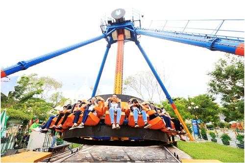
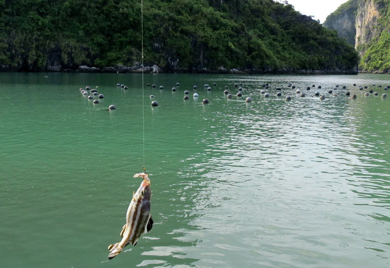
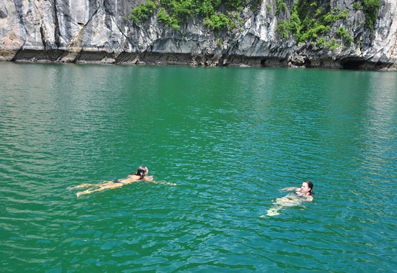
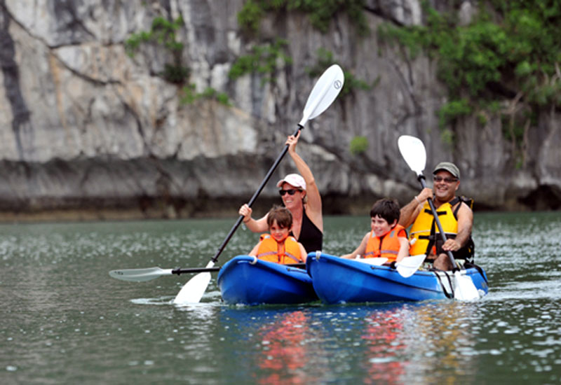
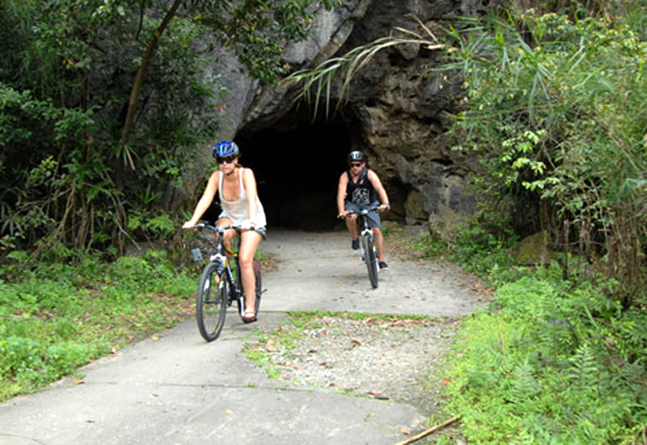

Hoạt động-Giải trí
Những Hoạt Động - Giải Trí Trên Vịnh Hạ Long là một sự trải nghiệm nhiều hoạt động hấp dẫn phù hợp cho mọi lứa tuổi như chèo thuyền Kayak, tắm biển, đạp xe, học nấu ăn hay bơi lội. Vẻ đẹp thiên nhiên trời phú của vùng biển Hạ Long làm nên một trải nghiệm tuyệt vời nhất trên các du thuyền Hạ Long sang trọng cho du khách.
Công viên thỏ trắng Tuần Châu
Công viên Thỏ Trắng Tuần Châu: là khu vui chơi cảm giác mạnh đầu tiên trên vịnh Hạ Long thu hút khách bởi các trò chơi cảm giác mạnh, đậm chất dân gian và ẩm thực phong phú.Các trò chơi tại công viên này đa số là cảm giác mạnh, được trực tiếp nhập khẩu từ nước ngoài về lắp ráp và vận hành. Đặc biệt, du khách sẽ tham gia một số trò chơi nổi bật Fly Away, Star Fly, khu vui chơi thực tế ảo và các loại hình được mệnh danh là King of Games như cướp biển Caribê, trượt làn Panda, apolo, hiphop, tàu lượn cao tốc...
Câu cá trên Vịnh Hạ Long
Hãy cùng du thuyền Hạ Long trải nghiệm đời sống địa phương chân thực nhất bằng cách tham gia một chuyến đi câu cá với ngư dân địa phương, và trở về nhà với những câu chuyện sống .
Tắm biển trên Vịnh Hạ Long
Không gì có thể làm bạn cảm thấy sảng khoái hơn là được bơi lội trong làn nước mát và ngắm nhìn những hòn đảo đẹp tuyệt vời ở Vịnh Hạ Long. Du khách thuộc mọi lứa tuổi đều có thể tham gia hoạt động này, bạn có thể bơi lội ở hàng loạt các bãi tắm trên vịnh, từ những bãi tắm nổi tiếng như Halong beach, Titop, Soi Sim đến những bãi tắm nhỏ hoang sơ hơn. Tắm biển là một hoạt động tuyệt vời dành cho cả gia đình hay nhóm bạn cùng tham gia trong khi tận hưởng thời gian thư giãn trên Vịnh Hạ Long. Hoạt động tắm biển thường được kết hợp với các chuyến du ngoạn đến bãi biển Ba Trái Đào, hang Sáng Tối, và làng Việt Hải...
Chèo thuyền Kayak trên Vinh Hạ Long
Chèo thuyền Kayak là hoạt động không thể bỏ qua khi tới thăm quan Vịnh Hạ Long, là cách hoàn hảo để khám phá những góc khuất trên vịnh dành cho các du khách ưa thích hoạt ..
Đạp xe khám phá Hạ Long
Một số tour du thuyền Hạ Long 3 ngày 2 đêm tổ chức hoạt động đạp xe dành cho khách hàng muốn khám phá đảo Cát Bà, thăm quan làng Việt Hải và vườn quốc gia trong hành trình du lịch Hạ Long của mình. Du thuyền Hạ Long tổ chức hoạt động đạp xe dành cho khách hàng muốn khám phá đảo Cát Bà, thăm quan làng Việt Hải và vườn quốc gia trong hành trình du thuyền 3 ngày 2 đêm. Hoạt động này đem đến cho du khách cơ hội trải nghiệm đôi chút mạo hiểm và vận động thể thao trong hành trình của mình. Chuyến đạp xe khoảng một giờ, xuất phát từ bến thuyền cho tới làng Việt Hải trên đảo Cát Bà. Ngôi làng nhỏ này nằm ẩn khuất giữa một thung lũng bao quanh bởi những rặng núi cao sừng sững và những cánh đồng rau. Du khách sẽ có cơ hội gặp gỡ những người dân địa phương, và dành thời gian tận hưởng sự yên bình tại thung lũng nguyên sơ này.